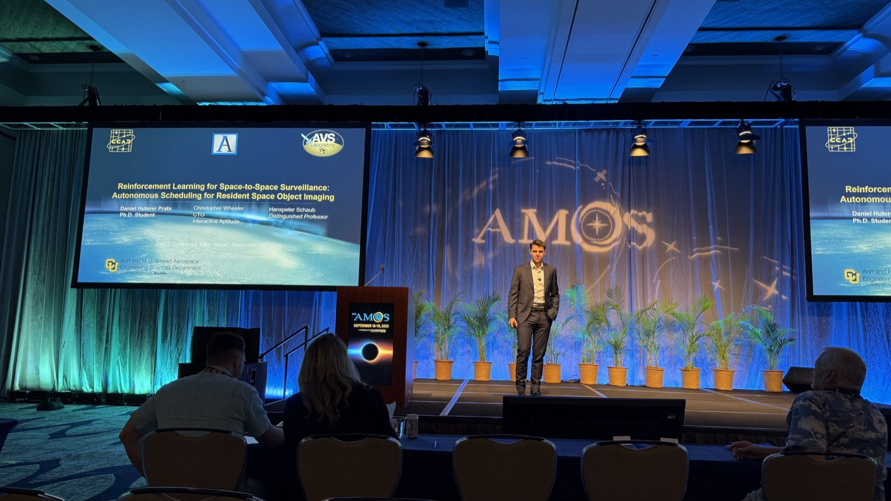
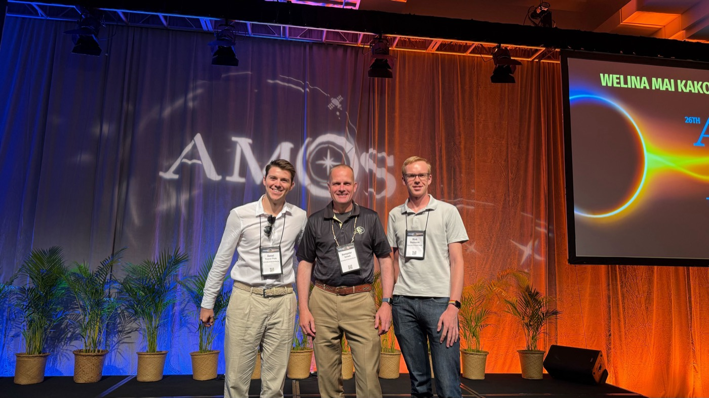

Overview & motivation
Space-based SSA is unlike Earth imaging. Targets move fast, access windows are brief, and power, pointing, and downlink are tightly constrained. The goal is a flight policy that decides which RSO to image and when to downlink, while keeping the spacecraft healthy for the next opportunity.
The main study focuses on LEO to LEO imaging, which is the hardest regime: large relative motion, long eclipse periods, and frequent geometry changes, including complete target eclipses.
Scenario & simulator
Setup clip: LEO chaser with power/thermal/storage constraints imaging catalogued RSOs.
Formulating SBSS as a POMDP
The task is posed as a POMDP: noisy observations of orbital geometry, battery, storage, visibility and ground-station windows; actions choose targets and downlink decisions; rewards balance useful imagery delivery, health margins, and constraint satisfaction.
RL agent & training
Representative rollout segment showing target-selection and downlink behavior while respecting LOS, battery, and onboard data constraints.
PPO trains over many randomized orbital seeds. Two repeating phases: rollouts in \(n_{\text{env}}\) parallel environments for \(n_b\) episodes each, then updates over the fresh on-policy data for \(n_{\text{opt}}\) epochs. Total steps \(T\) imply \(N_{\text{upd}} = T/(n_{\text{env}} n_b N)\) policy updates. Typical runs used a few hundred million steps on a single workstation. Exact settings per experiment are in Table 4 of the paper; full source is linked below.
Results: behaviors & plots
Azimuth/elevation pointing and downlink windows
Open full-resolution PDF- Energy/storage habits: preserves health margins while opportunistically imaging valid targets.
- Opportunistic imaging: adapts target choice to short-term geometry instead of rigid preplanned schedules.
- Timely delivery: executes downlink when windows open, improving delivered-image freshness.
Generalization: mixed LEO/MEO/GEO
With a target mix of around 50% LEO, 30% MEO, and 20% GEO, a policy trained on LEO still performs well. It reuses resource-management behavior and remains effective at selecting valid opportunities and scheduling downlink actions in the mixed environment.
Paper, slides & videos
Short visual summary from the AVS Lab YouTube channel.
Global perspective clip of the same run.
Photos
Stage photo: AMOS presentation.
With Dr. Hanspeter Schaub and Mark after the session.
Conclusion
RL-enabled scheduling learns practical resource-management behavior, balances imaging and downlink decisions under constraints, and generalizes across orbital seeds and mixed-orbit target sets. This supports scalable onboard autonomy for future SSA missions.